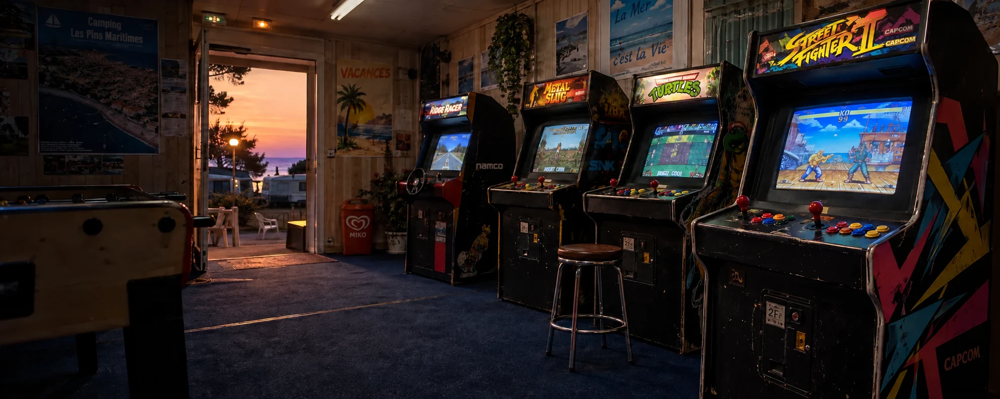

CANAL 11 · LA SALLE EST OUVERTEEncore une.
Ambiance reconstituée pour RETOUR90
Encore une.
La dernière.
Les boutons qui claquent. Le copain qui regarde.
Et ce record qu’on ne va quand même pas laisser là.
10 JEUX · ZÉRO PIÈCECLAVIER, SOURIS OU DOIGTSTES RECORDS RESTENT ICI
À TOI LES COMMANDES
Choisis ta borne.
Un clic, un grand écran, ta partie.
Pas de compte. Pas de file d’attente.
10 jeux disponibles
Tes meilleurs coups.
Ton palmarès personnel, conservé sur cet appareil.
Raconter ma meilleure partie au Club ↗Pose ton cartable. Prends les commandes.
01 · Choisis ton jeuChaque borne s’ouvre dans sa propre fenêtre. Les règles restent à portée de main.
02 · Joue à ta façonClavier, souris ou commandes tactiles. Tu peux couper les sons et faire une pause.
03 · Reviens battre ton recordLes scores restent dans ce navigateur. Fermer la fenêtre termine la partie en cours.
Des petits jeux maison inspirés de nos classiques. La salle est un décor reconstitué : les jeux visibles sur ses bornes ne sont pas proposés en émulation.
Entre deux parties, les vraies pubs consoles
Les archives restent à l’affiche. Choisis une vidéo pour la regarder sur la télé.